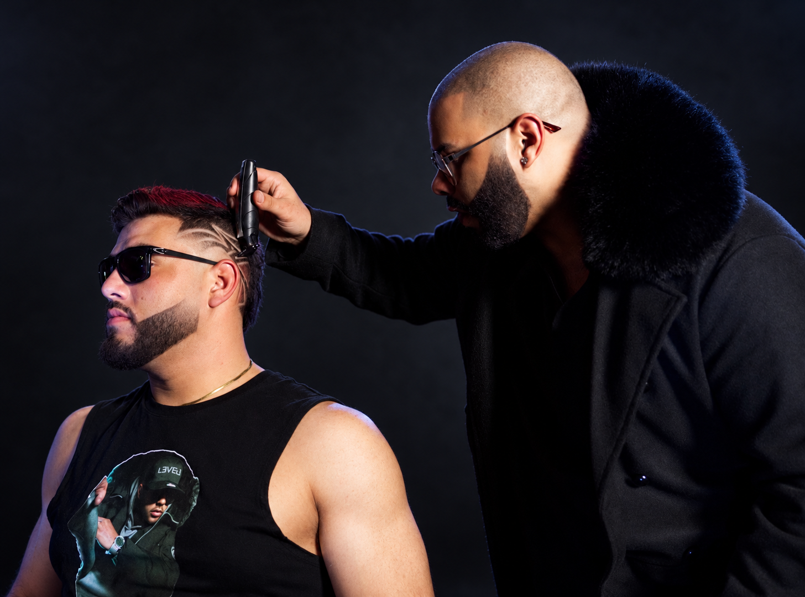
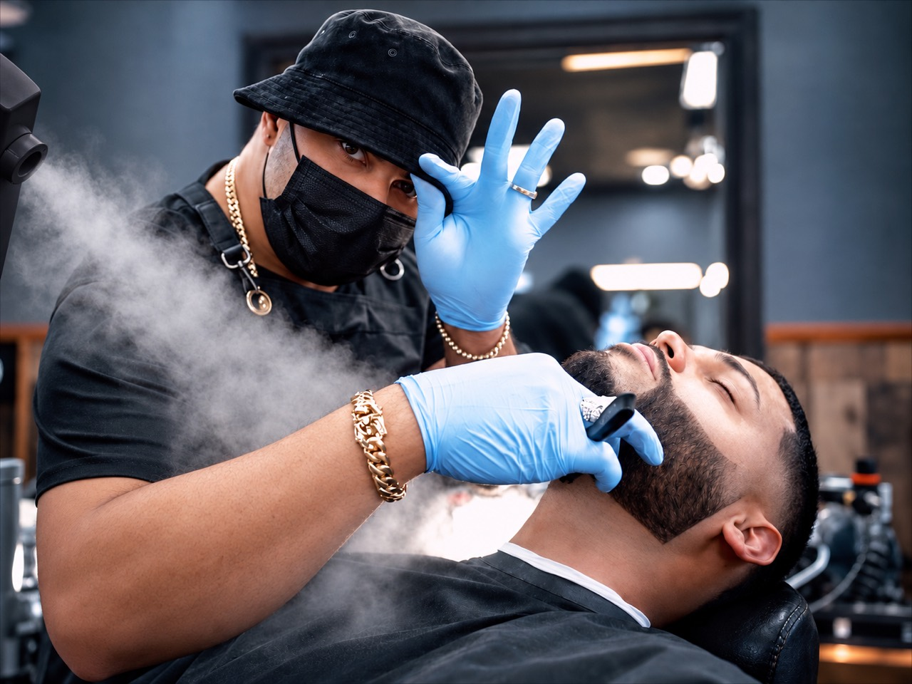

TULPI THE BARBER / A practical education preview
Your First
30 Days Brand, Clients & Practical AI
A clearer service. A better conversation. A next step you can use.
An English–Spanish learning experience by Carlos ‘Tulpi’ Turpeau. Explore three short exercises, hear the guidance and build a one-page action map for your next 30 days.
Read · Listen · Practice · English / Español
01 / Who it is for
Beauty professionals responsible for client communication in a service business, including licensed practitioners and owner-operators.
02 / What you leave with
One reviewed action map: a clear service statement, a respectful client message and one dated action supported by a human-checked AI draft.
03 / A manageable first step
15–20 minutes estimated; completion time has not yet been measured with learners.
THE FIVE-PILLAR MAP
Five pillars. One starting point.
Identity & professional direction
Brand & communication
Education & skills
Practical AI
Business & money foundations
One focused starting point within the five-pillar map. Brand and communication lead; professional direction and practical AI support the practice. The complete program is outside this preview.
Editorial backdrop: AI-created fictional models and scenes.
Learning path
Three exercises. One useful result.
Use a fictional situation. Write on paper or in the on-page fields. No AI account, subscription or real client information is needed. Your entries stay in this open page; download them before closing it.
Read the audio transcript
Welcome. This is a practical learning preview by Carlos Tulpi Turpeau, a bilingual barber instructor and educator. The aim is simple: a clearer service, a better client conversation and a next step you can use. You will work through three short exercises and create a one-page action map. Read, listen or use the printable guide. English and Spanish cover the same learning goals. Use fictional examples and keep real client information out of the exercise. This is an independent proposal for consideration, not an approved PBA program. Start with the first module whenever you are ready.
MP3 ↓ · TXT ↓Editorial backdrop · AI-created fictional models.
4 minutes / Your turn
01. Brand with direction
Say what you actually help people do.
A useful service statement names the person you serve, the need you address and a service you can actually deliver. Specific language helps a client understand the next conversation.
Fictional example: Alex offers haircut consultations and grooming services. Alex has not earned any awards mentioned in this exercise.
Starting draft
I am the best. I transform everyone’s life.
A more useful version
I help clients who want a manageable haircut explore a style and maintenance routine that fit their day.
- Choose a client need you understand.
- Complete: I help [audience] with [need] through [a service I can actually deliver].
- Remove one vague or unsupported claim. Read the sentence as if you were a new client.
Read the audio transcript
Start with a real service, not a big claim. Your brand should help someone understand whether you can serve their needs. In our fictional example, Alex offers haircut consultations and grooming services. Saying, I am the best, gives the client very little information. A clearer statement is: I help clients who want a manageable haircut explore a style and maintenance routine that fit their day. Now try your version. Name the people you serve, the need you address and the service you can actually deliver. Remove a claim you cannot support. Pause the audio, write one sentence and read it as a new client would. Clarity is the first result.
MP3 ↓ · TXT ↓Your turn / 01
Could a new client tell what you offer without a promise you cannot support?
Practice with fictional details. Nothing you type is sent. Download before closing this page.
Your action map ↗4 minutes / Your turn
02. A useful client conversation
Listen before you recommend.
A consultation begins with the client’s priority. An open question creates room to understand it; a clear next step gives the client a choice.
Fictional client: Sam wants a style that is easier to manage before work. Sam has not asked for a particular cut and has not agreed to book.
Starting draft
You need our premium service. Book now.
A more useful version
What takes the most time in your morning hair routine? If you would like, we can discuss a style and maintenance plan in a consultation before choosing a service.
- Ask one open question about Sam’s priority.
- Offer one clear next step without pressure or an assumed booking.
- Read the two sentences aloud. Check usefulness, tone and permission.
Read the audio transcript
A strong consultation is a conversation, not a sales script. Meet Sam, a fictional client who wants a hairstyle that is easier to manage before work. We do not know the right cut yet, and Sam has not agreed to book. Start with a question: What takes the most time in your morning hair routine? Then offer a choice: If you would like, we can discuss a style and maintenance plan in a consultation before choosing a service. Your task is to write two sentences of your own. One open question and one respectful next step. Read them aloud. Listen for pressure, assumptions and promises. Nothing is sent during this exercise.
MP3 ↓ · TXT ↓Your turn / 02
Does your message ask before recommending and leave the next step to the client?
Practice with fictional details. Nothing you type is sent. Download before closing this page.
Your action map ↗6 minutes / Your turn
03. Practical AI. Human decision.
Keep the judgment. Improve the draft.
AI can help shape a message, but a polished sentence can still contain an invented claim. Check the facts and the tone before using it.
Practice-only AI-style draft. It is supplied for review; this page does not call an AI service. The facts remain those of Alex and Sam in the previous exercises.
Starting draft
Our award-winning team guarantees a perfect look in one appointment. Book today and you will never struggle with your hair again.
A more useful version
What would you most like to simplify in your daily routine? If you would like, we can start with a consultation and discuss a style and maintenance plan before choosing a service.
- Find the invented award and the unsupported guarantees.
- Rewrite the message using only known facts, an open question and a next step the client can choose.
- Explain one correction. Choose one action and a date within the next 30 days; plan checks on days 7, 14 and 30.
Read the audio transcript
Useful artificial intelligence begins with responsible human review. Read the practice draft on screen. It claims an award-winning team and guarantees a perfect result. Neither claim is supported by our fictional case. A confident tone is not evidence. Remove the invented award and the guarantees, then return to an open question and a clear next step. Explain one correction in your own words. This is a supplied example, so you do not need an AI account and you should not enter client information. Finally, choose one action you can complete within thirty days. Add a date and plan checks on days seven, fourteen and thirty. The tool can help draft. You remain responsible for what you use.
MP3 ↓ · TXT ↓Your turn / 03
Can you explain why your revision is more accurate and respectful?
Practice with fictional details. Nothing you type is sent. Download before closing this page.
Your action map ↗YOUR NEXT MOVE / 30
Review your next step
Your self-review
Self-review: 0 = missing; 1 = needs revision; 2 = clear and supported. Maximum 6. Revise any item below 2 and compare your first and revised work. This is learning feedback, not certification.
Self-review total:
Read the audio transcript
Before you finish, review three things. Is your service clear and supported? Is your client message useful and respectful? Did your AI review correct an unsupported claim and explain why? Give each item zero, one or two points. Zero means missing, one means revise and two means clear and supported. Revise any item below two. The score is feedback, not a certificate. Then choose one action and a date within the next thirty days. Check your progress on days seven, fourteen and thirty. Download your action map before closing the page. Your next step matters more than a perfect first draft.
MP3 ↓ · TXT ↓- Day 7: check clarity.
- Day 14: revise after feedback.
- Day 30: review what changed and choose the next action.
Practice with fictional details. Nothing you type is sent. Download before closing this page.
The educator behind the experience
Carlos “Tulpi”
Turpeau.
A skill becomes more valuable when you can explain it, serve with it and pass it on.
Carlos is a South Carolina-licensed barber instructor, registered barber and bilingual educator based in Greenville. Founder of Tulpi The Barber and United Multimedia, he connects professional practice with communication, brand development and responsible technology.
Professional Profile ↗Tulpi The Barber · United Multimedia
De Barbero Dotado a Artista Leyenda

PDF / ENGLISH + ESPAÑOL
Keep the guide
A focused first collaboration
Choose the need.
Shape the first step.
For institutional review: identify one priority audience need, name a reviewer and agree the pilot boundary, review window and contributor terms before a member-facing release.
Discuss a focused pilot ↗